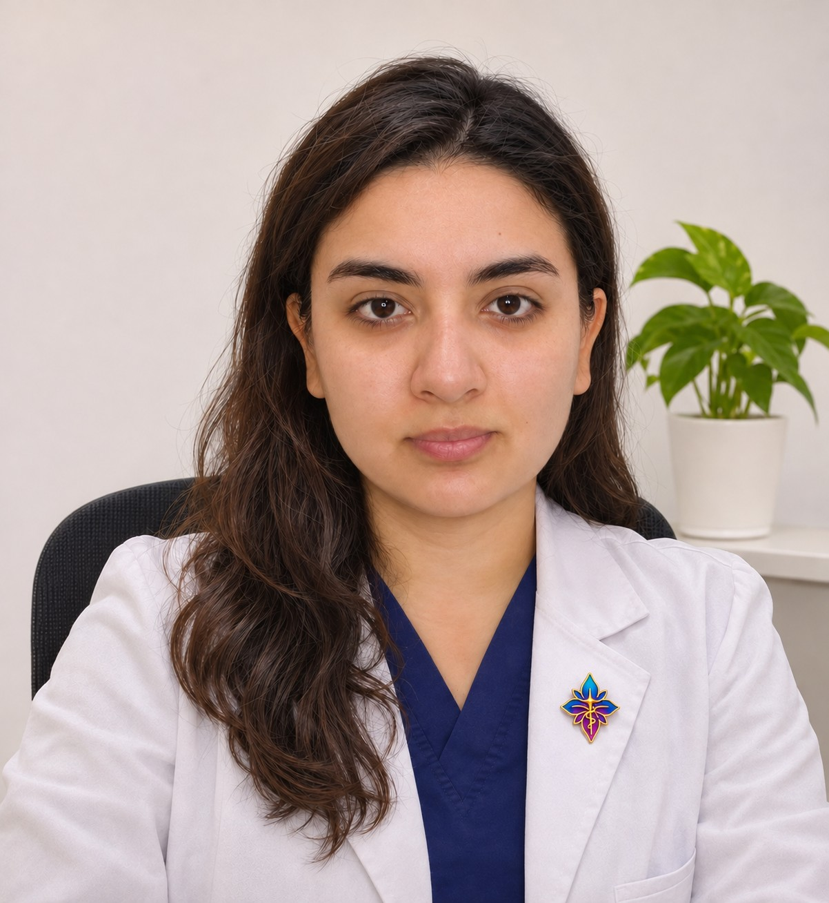

Formación continua
Soy nutricionista, instructora de Yoga Integral y actualmente estudio Medicina. A lo largo de más de una década he complementado mi formación con cursos y capacitaciones vinculados a la salud y la nutrición.

Soy nutricionista, instructora de Yoga Integral y estudiante de Medicina. Hace más de 10 años que mi camino está dedicado al estudio de la salud, con el propósito de ofrecer una atención clínica cercana, individualizada y basada en evidencia.
Una mirada integral que une formación continua, criterio clínico y respeto por la historia de cada persona.
Mi recorrido reúne distintas áreas de aprendizaje que enriquecen la forma en que entiendo el bienestar y el acompañamiento nutricional.
Soy nutricionista, instructora de Yoga Integral y actualmente estudio Medicina. A lo largo de más de una década he complementado mi formación con cursos y capacitaciones vinculados a la salud y la nutrición.
Me interesa comprender los procesos de salud y enfermedad desde una perspectiva clínica e integral, utilizando la evidencia científica como guía y adaptando cada recomendación a las necesidades de la persona.
Mi práctica se orienta al cambio de hábitos y al acompañamiento nutricional en distintas condiciones crónicas y metabólicas.
Cada persona llega con necesidades, experiencias y objetivos distintos. Por eso, el acompañamiento se construye paso a paso.
Comprender tus necesidades, antecedentes, estilo de vida y las dificultades que pueden estar influyendo en tu salud.
Identificar prioridades y establecer metas progresivas, realistas y coherentes con tu situación y etapa de vida.
Entregar orientación y herramientas prácticas, revisando los avances para favorecer cambios conscientes y sostenibles.
«No se trata solamente de ser empático. Se trata de ser humano».
Creo en una atención donde el conocimiento y la ciencia conviven con el respeto, la escucha y la comprensión de cada historia.
Formación profesional como nutricionista y desarrollo de una práctica enfocada en la salud y la alimentación.
Formación como instructora de Yoga Integral, incorporando una perspectiva complementaria del bienestar.
Actualmente estudiante de Medicina. Continúo profundizando mis conocimientos mediante estudios, cursos y capacitaciones en salud y nutrición.
Si buscas orientación nutricional con un enfoque clínico, personalizado y basado en evidencia, podemos comenzar conociendo tu historia y tus necesidades.
Consultar por una atención →